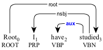
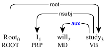
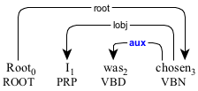
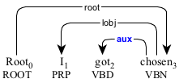
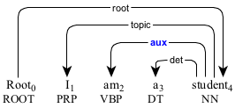

An auxiliary (aux) is either an auxiliary verb or a modal that inflects a verbal predicate.
The auxiliary verb "am" inflecting the progressive aspect.

The auxiliary verb "have" inflecting the prefect aspect.

The auxiliary verb "did" inflecting the past tense.

The modal "will" inflecting the future tense.

The auxiliary verb "was" inflecting the passive construction.

The auxiliary verb "got" inflecting the passive construction.